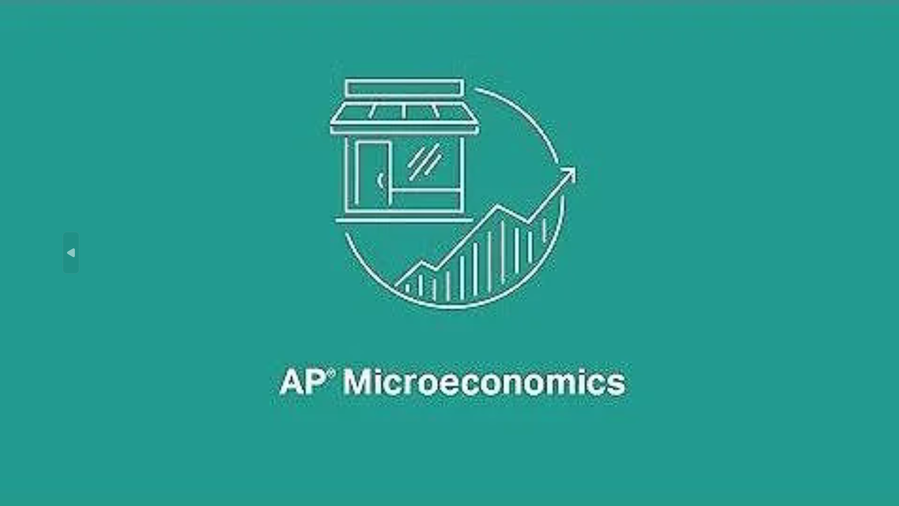

Microeconomics

AP MICROECONOMICS · COURSE OVERVIEW
建立经济学思维方式，是整门课程的分析基础。
微观经济学的核心分析工具，后续所有市场结构分析都建立在此基础之上。
从企业生产决策出发，建立成本曲线体系，并推导完全竞争市场的短期与长期均衡。
分析垄断、垄断竞争和寡头三种市场结构，理解企业如何运用市场势力定价及效率损失。
将供需分析应用于劳动力等生产要素市场，研究企业如何决定雇佣与工资。
分析市场无法实现效率的情形，以及政府如何通过政策干预来纠正市场失灵。
College Board 官方课程与考试说明